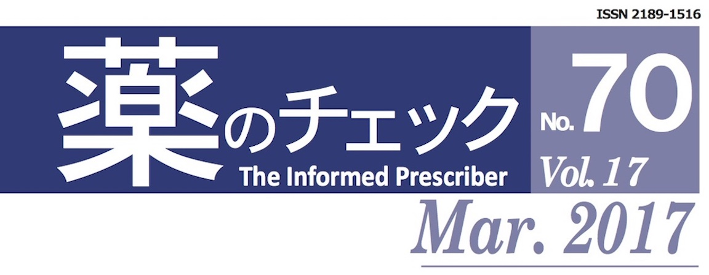

購読のしかた
申し込みの前にお読みください
「薬のチェック」誌は、印刷物媒体ですが、電子版も読むことができます
パソコンを使う環境にない方や、印刷物のほうが使いやすい、親しみがあるという方は、印刷物媒体をお読みください。
「電子版を参照」という文言がある場合、各自のIDコードとパスワードで電子版をお読みくださいますよう、お願いいたします。電子版には、紙面の都合で収載しきれなかった参考文献やグラフ・表、専門的な情報などをアップしています。
申込みは、個人名でお願いいたします
団体・会社などの場合は、氏名欄にはパスワード管理者としてどなたか個人名のご記入をお願いします。
購読料
購読料（年度は、該当年の１月発行号～１１月号まで）
★印刷物媒体（電子版付き）：年間６０００円（消費税、送料込み）
入金を確認後、電子版を読むための「ＩＤコード」と「パスワード」を郵送にてお送りいたします。
支払い方法
購読料の支払いは、郵便振替または三井住友銀行、三菱UFJ銀行への振込からお選びいただけます。金融機関の情報は、注文フォームにあります。
新規購読の申込みはこちら
電子版PDFに関して
最新号の目次と概略案内は以下をご覧ください。
←←← PDF版へはタイトル画像をクリックしてください。
薬のチェック No86（2019年11月）記事目次 主な記事要旨・文献 Free
目次／編集部から pdf Free
Editorial
New Products
インスリンデグルデク（商品名：トレシーパ） まとめ・文献 Free
基礎分泌ィンスリンの補充用に必要 Web表 Free
総説
・診療ガイドラインと利益相反
・企業が出資する研究は出版物？それとも広告？
治療ガイドライン批判シリーズ（11-続編）
英国（NICE）の基準は「160/100以上で治療 まとめ・文献 Free
害反応
・抗インフルエンザ剤ゾフルーザの害：耐性・肺炎・突然死・出血 記事導入部・文献 Free
・抗精神病剤：神経毒であり脳を萎縮させる 記事導入部・文献 Free
・鉄剤の誤嚥による気管支の壊死 記事導入部・文献 Free
連載
医師国家試験に挑戦しよう（問題）
コーヒー無礼区
医師国家試験に挑戦しよう（正解と解説）
患者用くすりの説明書 インスリン デグルデク
医薬品危険性情報あれこれ
みんなのやさしい生命倫理 86 「生老病死」（56）
Others
ISDB 総会報告
FORUM
「アスピリンとPPI併用と認知機能低下について」の記事を読んで
ISDB総会に参加して
書評：『新型タバコの本当のリスク』
次号予告／編集後記
表紙のことば：晩秋に燃えるような紅色に染まる蔦は、蔦紅葉（つたもみじ）とも呼ばれ秋の季語になっています。
←←← PDF版へはタイトル画像をクリックしてください。
薬のチェック No85（2019年9月）記事目次 主な記事要旨・文献 Free
目次／編集部から pdf Free
Editorial
New Products
成人慢性便秘症用剤 ラグノスNF経口ゼリー まとめ・文献 Free
新たに適応を得たが、症例によっては有用
C型肝炎用薬剤：薬価を下げるときだ!!
総説：ガイドライン批判シリーズ（11）
高血圧ガイドライン2019の科学的根拠は希薄 まとめ・文献 Free
Web資料1：SPRINT試験のデータの矛盾、Wei論文のデータの偏り Free
Web資料3：高血圧GL2019が根拠にした19論文リスト Free
Adverse Reactions
低用量ピルの害：うつ病と自殺 記事導入部・文献 Free
ACE阻害剤は肺がんを増やすか？ 記事導入部・文献 Free
連載
・コーヒー無礼区
・薬剤師国家試験に挑戦しよう（問題）
・薬剤師国家試験に挑戦しよう（正解と解説）
・医薬品危険性情報あれこれ
・患者用くすりの説明書 低用量ピル
避 妊：アンジュ、トリキュラー
月経困難症：ジェミーナ配合剤
・みんなのやさしい生命倫理 85 「生老病死」（55）
その他
・FORUM
老健施設入居者の骨粗しょう症にどう対処すればよいのか？
アスピリンとPPI併用と認知機能低下
次号予告／編集後記
表紙のことば：秋のお彼岸頃に咲く白花曼珠沙華。静かな佇まいの中にも、華やかさを感じさせます。
←←← PDF版へはタイトル画像をクリックしてください。
薬のチェック No84（2019年7月）記事目次 主な記事要旨・文献 Free
目次／編集部から pdf Free
Editorial
New Products
慢性便秘用剤モビコール配合剤 まとめ・文献 Free
酸化マグネシウムに代わり第一選択に Web資料１ Free
カナキヌマブ（商品名イラリス）と周期性発熱症候群 まとめ・文献 Free
症状に対する効果はあるが、長期の評価は不明
Adverse Reactions
抗前立腺肥大症に対する5α還元酵素阻害剤 記事導入部・文献 Free
糖尿病のリスクが増える
デノスマブ：中止後に中止後に多発性脊椎骨折 まとめ・文献 Free
害が益を上回る、使わない
総説：ガイドライン批判シリーズ（10）
低用量ピル(OC・ⅬEP）ガイドライン批判 まとめ・文献 Free
高リスク者では37人に1人が血栓塞栓症に Web資料２ Free
連載
・医師国家試験に挑戦しよう（問題）
・医師国家試験に挑戦しよう（正解と解説）
・コーヒー無礼区
・医薬品危険性情報あれこれ
・患者用くすりの説明書 C型慢性便秘用緩下剤（モビコール配合剤）
・みんなのやさしい生命倫理 84 「生老病死」（54）
その他
・FORUM
青竹踏みが夜間頻尿をよくするって本当？
降SGLT-2阻害剤を再検討してほしい
次号予告／編集後記
表紙のことば：紅白の対比が鮮やかな源平葛。源平合戦の戦いの象徴であった紅と白が、その名の由来です。
←←← PDF版へはタイトル画像をクリックしてください。
薬のチェック No83（2019年5月）記事目次 主な記事要旨・文献 Free
目次／編集部から pdf Free
Editoria
New Products
C型肝炎用の新直接作用型抗ウイルス剤（商品名エプクルーサ）まとめ・文献 Free
前治療無効例や非代償性肝硬変の治療に進展あり
ペムブロリズマブ（商品名キイトルーダ） まとめ・文献 Free
局所進行性または転移性の尿路上皮がんに限定使用
Adverse Reactions
抗インフルエンザ剤ゾフルーザによる出血 記事導入部・文献 Free
骨粗しょう症治療のデノスマブによる免疫不全 まとめ・文献 Free
総説：ガイドライン批判シリーズ（10）
夜間頻尿診療ガイドラインの批判と提言 まとめ・文献 Free
薬物療法ではよくならない
連載
・薬剤師国家試験に挑戦しよう（問題）
・薬剤師国家試験に挑戦しよう（正解と解説）
・痛風性関節炎の治療奮闘記 その② 浜六郎 記事導入部・文献 Free
・医薬品危険性情報あれこれ
・患者用くすりの説明書 C型肝炎用剤
・みんなのやさしい生命倫理 83 「生老病死」（53）
その他
・FORUM
Q:マイスリーについて二説あるのは、なぜ Web資料 Free<
Q:降圧剤ディオバンのデータねつ造について
次号予告／編集後記
表紙のことば：さわやかな風が吹きわたる五月、新緑は輝き、木々は生命力にあふれています。
←←← PDF版へはタイトル画像をクリックしてください。
薬のチェック No82（2019年3月）記事目次 主な記事要旨・文献 Free
目次／編集部から pdf Free
Editoria
New Products
オピオイド過量における経鼻ナロキソン
オピオイド拮抗剤：救命に有用かつ使いやすい まとめ・文献 Free Web資料 Free
Adverse Reactions
・低カリウム血症を起こす薬剤 漢方薬や市販の薬剤も要注意 記事導入部・文献 Free
・抗ヒスタミン剤デスロラタジン、ロラタジン 異常行動やQT 延長が起こる まとめ・文献 Free
総説：ガイドライン批判シリーズ（９）
認知症疾患診療ガイドラインは薬物偏重 まとめ・文献 Free Web資料 Free
認知症に薬剤は不要、接し方を工夫し、治さなくてよい
連載
・医師国家試験に挑戦しよう（問題）
・医師国家試験に挑戦しよう（正解と解説）
・医薬品危険性情報あれこれ
・患者用くすりの説明書 尿アルカリ化剤
・みんなのやさしい生命倫理 82 「生老病死」（52）
その他
・痛風性関節炎の治療奮闘記 その① 記事導入部・文献 Free Web資料 Free
・FORUM 高尿酸血症や痛風の治療について
薬剤の併用を主治医にやめてもらうには？
次号予告／編集後記
表紙のことば：春の妖精が舞い降りたかのような優しいピンク色の桃の花が、本格的な春の到来を告げていました。

←←← PDF版へはタイトル画像をクリックしてください。
薬のチェック No81（2019年1月）記事目次 主な記事要旨・文献 Free
目次／編集部から pdf Free
Editoria
New Products
・偽膜性腸炎用剤 フィダキソマイシン：
安全・有効だが、軽々しく使わない まとめ・文献 Free
・慢性便秘症用緩下剤 エロビキシバット：
判定保留、長期使用は問題 まとめ・文献 Free
Adverse Reactions
・血糖降下剤SGLT-2阻害剤による重篤な感染症 記事導入部・文献 Free
・抗菌剤スルファジアジン銀クリーム まとめ・文献 Free
総説：ガイドライン批判シリーズ（８）
・高尿酸血症・痛風治療ガイドライン まとめ・文献 Free
無症状の高尿酸血症は薬物療法の対象にすべきでない、非薬物療法の徹底を
連載
・薬剤師国家試験に挑戦しよう（問題）
・薬剤師国家試験に挑戦しよう（正解と解説）
・コーヒー無礼区
・医学研究の方法、基本の「き」⑤バイアスと時間軸 記事導入部・文献 Free
・医薬品危険性情報あれこれ
・患者用くすりの説明書 緩下剤エロビキシバット
・みんなのやさしい生命倫理 81 「生老病死」（51）
FORUM
医師は独自の治療をしてはいけないのか？
疑義照会を拒む医師への対応は？
次号予告／編集後記
表紙のことば：冬空の下、白木蓮のつぼみが光を浴びて、春への期待いっぱいに膨らんでいました。
薬のチェックTIP No80（2018年11月）記事目次 主な記事要旨・文献 Free
目次／編集部から pdf Free
Editoria
New Products
・帯状疱疹サブユニットワクチン シングリックス まとめ・文献 Free
判定保留：効果はあるが、害判定に欠陥 Web資料 Free
・新型インフルエンザ用剤 ゾフルーザ まとめ・文献 Free
価値なし：タミフルと差なし、免疫ができにくくなる
総説
・治療ガイドライン批判シリーズ（6）
糖尿病ガイドライン批判 まとめ・文献 Free
害反応
タミフルによる重症精神症状：新たな証拠 まとめ・文献 Free
重篤な異常行動・精神症状が29～35倍
HPVワクチンは死亡を増やす：コクランデータで
ミラベグロン：仏保健省が償還反対
連載
・医師国家試験に挑戦しよう（問題）
・医学研究の方法、基本の「き」
④研究の進め方、仮説から出版へ
・医薬品危険性情報あれこれ
・患者用薬の説明書 ゾフルーザ
・みんなのやさしい生命倫理 80 「生老病死」（50）
・医師国家試験に挑戦しよう（正解と解説）
その他
・News
コクラン暴走：最大の功労者を除名
認知症用剤が保険対象外に：フランス
・FORUM
心筋梗塞と主観
喘息にオマリズマブは？
次号予告／編集後記
薬のチェックTIP No79（2018年9月）記事目次 主な記事要旨・文献 Free
目次／編集部から pdf Free
Editorial
「悪魔の証明」はたやすい pdf Free
New Products
新コレステロール低下剤 PCSK9阻害剤：不要 まとめ・文献 Free
長期試験で総死亡が増えている Web資料 Free
総説
治療ガイドライン批判シリーズ（5）
喘息治療の基本とガイドライン批判 まとめ・文献 Free
害反応
尿酸降下剤 フェブキソスタット：使ってはいけない まとめ・文献 Free
連載
薬剤師国家試験に挑戦しよう（問題）
コーヒー無礼区
医学研究の方法、基本の「き」
③比較試験の差は因果関係を示す まとめ・文献 Free Web資料 Free
医薬品危険性情報あれこれ まとめ・文献 Free
患者用薬の説明書 尿酸低下剤（フェブキソスタット）
みんなのやさしい生命倫理 第79回 生老病死（49）
薬剤師国家試験に挑戦しよう（正解と解説）
その他
FORUM 日本動脈血硬化学会のガイドラインについて
次号予告／編集後記
薬のチェックTIP No78（2018年7月）記事目次 主な記事要旨・文献 Free
目次／編集部から pdf Free
Editorial
抗がん剤――延命効果も評価も乏しい pdf Free
総説
治療ガイドライン批判シリーズ（4）
動脈硬化学会GL＝コレステロールガイドライン まとめ・文献 Free Web資料-1 Free
New Products
コレステロール低下剤：ロミタピドは毒性が強い まとめ・文献 Free Web資料-1 Free
がんの疼痛治療：ヒドロモルフォン
（解説）がんの成人患者に対する鎮痛療法の基本 まとめ・文献 Free
患者用くすりの説明書番外編
がんの痛み治療で医師が陥りやすい間違い・やってはならないこと Web資料-2 Free
患者用くすりの説明書「モルヒネ」 Web資料-3 Free
害反応
スタチン剤の典型的な６つの害 まとめ・文献 Free
連載
医師国家試験に挑戦しよう（問題）
患者用薬の説明書 スタチン剤（コレステロール低下剤）
コーヒー無礼区
医学研究の方法、基本の「き」
②因果関係を直接には経験できない まとめ・文献 Free
医薬品危険性情報あれこれ まとめ・文献 Free
医師国家試験に挑戦しよう（正解と解説）
みんなのやさしい生命倫理 第78回 生老病死（48）
その他
FORUM スボレキサントなど新たな睡眠剤について
書評 近代日本一五〇年 Free
次号予告
編集後記 Free

薬のチェックTIP No77（2018年5月）記事目次 主な記事要旨・文献Free
目次／編集部から（pdfFree）
Editorial
薬剤性肺炎の疫学研究から見えてきたこと （pdfFree）
New Products
グアンファシン（商品名インチュニブ）と注意欠如多動性障害 まとめ・文献 pdfFree
薬剤師国家試験に挑戦しよう（問題）
新連載・医学研究の方法、基本の「き」
二度あることは三度ある 導入と目次 pdfFree
総説
高血圧ガイドラインは病気づくりのガイドライン まとめ・文献Free Web資料 pdfFree
害反応
ベンゾジアゼピン剤による肺炎 まとめ・文献Free Web資料 pdfFree
バレニクリン（商品名チャンピックス）と精神障害 まとめ・文献Free
鈴木論文はHPV ワクチンの害を示す （pdfFree）
医薬品危険性情報あれこれ
リチウムの薬物相互作用、医薬品有害反応報告データベース、
【フィンゴリモドで血小板減少、塩化ラジウムで死亡が増える
みんなのやさしい生命倫理 第77回 生老病死（47）
FORUM
HPVワクチンを巡る村中璃子医師の主張について
「タミフルのインフルエンザ予防に対する効果について
コレステロール低下剤をやめたが、脳梗塞の不安がある
薬剤師国家試験に挑戦しよう（解答と解説）
編集後記
薬のチェックTIP No76（2018年3月）記事目次 主な記事要旨・文献Free
ハイライト（pdfFree）
Editorial
「試用する権利」は「患者の権利」か？ （pdfFree）
総説
総合健診は有効か？ まとめ・文献Free
New Products
バレニクリン（商品名：チャンピックス） まとめ・文献 pdfFree
医師国家試験に挑戦しよう（問題）
患者用薬の説明書
バレニクリン-
New Products
睡眠時無呼吸症候群にモダフィニルは使ってはいけない） まとめ・文献 pdfFree-
医薬品危険性情報あれこれ
【WHO】デスロラタジン、ロラタジンと小児の体重増加
【WHO】プレガバリン（リリカ）と色覚障害
【WHO】SGLT2阻害剤と陰部そう痒症
【カナダHealth Canada】フィナステリド:重篤な筋関連のリスク
害反応
降圧剤アリスキレン（商品名ラジレス） まとめ・文献 pdfFree-
みんなのやさしい生命倫理 第76回 生老病死（46）
FORUM
75号ワクチンの図はおかしいのでは？
「がん検出 有効性不明」という新聞記事を読んで
医師国家試験に挑戦しよう（解答）
編集後記
薬のチェックTIP No75（2018年1月）記事目次 主な記事要旨・文献Free
ハイライト（pdfFree）
Editorial
ガイドラインはだれのため？ （pdfFree）
New Products
睡眠剤ラメルテオン（商品名ロゼレム）
頭痛やうつ病、免疫抑制、発がん性あり 要旨・文献 pdfFree Web資料 pdfFree
正誤表あり pdfFree
乳児のHIV 治療に有益 ラルテグラビル 要旨・文献 pdfFree
薬剤師国家試験に挑戦しよう（問題）
総説
日本のインフルエンザ治療は間違っている pdfFree
害反応
タミフル服用後は、異常行動が16 倍に
抗うつ剤：精神疾患のない成人における自殺と暴力
抗うつ剤使用後の性機能障害
鼻や咽頭のうっ血に使う薬剤による心房細動
薬剤師国家試験に挑戦しよう（解答）
医薬品危険性情報あれこれ
【英MHRA】抗がん剤 PD-1 阻害剤（ニボルマブなど）：臓器移植拒絶反応の報告
【EMA】乳糖含有メチルプレドニゾロン注射用製剤：牛乳タンパクアレルギー患者で禁忌に
【英MHRA】セレキシパグ：CYP2C8 の強力な阻害剤との併用は今後禁忌に
【NZ MEDSAFE】高齢患者の副作用報告
みんなのやさしい生命倫理 第75回 生老病死（45）
FORUM
Ｑ：健康な高齢者に関する健診の統計は？
Ｑ：74 号「医師国家試験問題に挑戦しよう！」解説は疑問
編集後記
薬のチェックTIP No74（2017年11月）記事目次 主な記事要旨・文献Free
今号のハイライト（pdfFree）
Editorial
高齢者よ！ 薬を捨てよう （pdfFree）
New Products
睡眠剤スボレキサント（商品名ベルソムラ）
ナルコレプシーを起こす物質 これは薬なのだろうか? 要旨・文献 pdfFree Web資料 pdfFree
骨粗しょう症:テリパラチド注（商品名フォルテオ、テリボン）
害のほうが大きい、推奨しない 要旨・文献 pdfFree Web資料 pdfFree
医師国家試験（問題）
総説
PPI で肺炎は増えなかったとする論文の問題点 要旨・文献 pdfFree
糖尿病に使う薬剤を評価する 要旨・文献 pdfFree Web資料 pdfFree
2016 年脂質栄養学会シンポジウムで発表した スライド pdfFree
害反応
ステロイド剤の短期使用による小児への害
胎児も非ステロイド抗炎症剤に晒されている
過活動膀胱の治療剤ミラベグロンによる心房細動
医師国家試験に挑戦しよう（解答）
医薬品危険性情報あれこれ
・デノスマブ：外耳道骨壊死の報告
・型糖尿病に使うDPP-4 阻害剤：関節痛のリスク
・カナグリフロジン（SGLT-2阻害剤）：下肢切断のリスク上昇
・レボチロキシンとパニック発作
みんなのやさしい生命倫理 第74回 生老病死（44）
FORUM
レボチロキシンとパニック発作
PPI の評価は矛盾しているのでは？
検査値改善で「健康になった」といえるか？
書評「あなたの体は9 割が細菌」
編集後記
薬のチェックTIP No73（2017年9月）記事目次 主な記事要旨・文献Free
今号のハイライト（pdfFree）
Editorial
WHO はコクランレビューに従いタミフルを格下げ （pdfFree）
New Products
糖尿病性の神経障害性疼痛に
デュロキセチン（商品名サインバルタ）は不要 要旨 pdfFree Web資料 pdfFree
糖尿病の３大合併症の一つ、神経障害性疼痛について Web資料 pdfFree
糖尿病性の神経障害性疼痛にカプサイシン（唐辛子成分：貼付剤）は有効か 要旨 pdfFree
薬剤師国家試験（問題）
総説
四種混合ワクチン（DTP-IPV） 要旨 pdfFree Web資料 pdfFree
不眠と最適な睡眠時間、睡眠剤の害 要旨 pdfFree
害反応
プロトンポンプ阻害剤（PPI）による肺炎 要旨 pdfFree
医薬品危険性情報あれこれ
みんなのやさしい生命倫理 第73回 生老病死（43）
FORUM
複数のワクチンの同時接種で部位を離すのは、なぜ？
子宮頸がん死亡率推移のグラフの見方に疑問
医薬品売上高の調べ方を教えてください
薬剤師国家試験（解答）
編集後記
薬のチェックTIP No72（2017年7月）記事目次 主な記事要旨・文献Free
印刷版のための正誤表があります(Web版は訂正済み）(正誤表と補足（改訂版）Free)
今号のハイライト（pdfFree）
Editorial
その治療・予防 本当に必要？ 疫学調査の重要性 （pdfFree）
New Products
骨粗しょう症に使うデノスマブ（商品名プラリア） 要旨 pdfFree
ドライアイにシクロスポリン点眼 要旨 pdfFree
医師国家試験（問題）
総説
小児への肺炎球菌ワクチン、Hib（ヒブ）ワクチンは？ 要旨 pdfFree Web資料 pdfFree
害反応
腱損傷を起こす薬剤 要旨 pdfFree
医薬品危険性情報あれこれ
みんなのやさしい生命倫理 第72回 生老病死（42）
FORUM
Ｑ：中学生の予防的ピロリ菌除菌の根拠は？
編集部の補足と読者へのお願い
医師国家試験（解答）
編集後記
薬のチェックTIP No71（2017年5月）記事目次 主な記事要旨・文献Free
今号のハイライト（pdfFree）
Editorial
司法に医学的判断を任せて いいものか？ （pdfFree）
総説
早期発見乳がんの標準治療は どうするか？ 要旨 pdfFree
子宮頸がん死亡はスクリーニングでは減らない 要旨 pdfFree Web資料 表と図
pdfFree
薬剤師国家試験（問題）
New Products
帯状疱疹ワクチンの効果と害は？ 要旨 pdfFree
便秘用薬剤リナクロチド（商品名リンゼス） 要旨 pdfFree
特発性肺線維症にニンテダニブ（商品名オフェブ） 要旨 pdfFree
薬剤師国家試験（解答）
害反応
プソイドエフェドリンで虚血性大腸炎 要旨 pdfFree
C 型肝炎用剤ソホスブビルで肺動脈性肺高血圧症 要旨 pdfFree
抗がん剤ベバシズマブで声帯が壊死 要旨 pdfFree
オピオイドで副腎機能の低下 要旨 pdfFree
みんなのやさしい生命倫理 第71回 生老病死（41）
医薬品危険性情報あれこれ
FORUM
Ｑ：「人年」の概念と本文記述とが合わないのでは？
書評：「つくられた恐怖の点滴殺人事件」
小児への肺炎球菌ワクチン、Hib（ヒブ）ワクチンは？
編集後記
薬のチェックTIP No70（2017年3月）記事目次 主な記事要旨・文献Free
今号のハイライト（pdfFree）
Editorial
最適使用とは何か――医学的根拠をもっと厳密に （pdfFree）
総説
肺炎球菌結合型ワクチン 要旨 pdfFree
New Products
抗PD-1 抗体:ペムブロリズマブ(商品名キイトルーダ) 要旨 pdfFree
イダルシズマブ(商品名プリズバインド) 要旨 pdfFree
医師国家試験（問題）
害反応
吐き気止めのドンペリドンとメトクロプラミド 要旨 pdfFree
医師国家試験（解答）
話題
コウノメソッドの評価について
みんなのやさしい生命倫理 第70回 生老病死（40）
医薬品危険性情報あれこれ
FORUM
アリセプトは認知症に有効ではないのか？
編集後記
薬のチェックTIP No69（2017年1月）記事目次 主な記事要旨・文献Free
今号のハイライト（pdfFree）
Editorial
悪夢から目覚める時――「コレステロール= 魔物」仮説 （pdfFree）
総説
予防接種、打つ、打たない、どうする？ 要旨 pdfFree
New Products
新コレステロール低下剤(PCSK9 阻害剤) 要旨 pdfFree
糖尿病用剤デュラグルチド(GLP-1作動剤) 要旨 pdfFree
話題
5か月連続で最もよく読まれた論文、ほか
医薬品危険性情報あれこれ
害反応
NSAIDs やステロイド剤による虚血性大腸炎、大腸穿孔 要旨 pdfFree
フィナステリド、カナグリフロジン
薬剤師国家試験（問題）
日常使う医薬品を検証する
⑨「かゆみがあるとき」
みんなのやさしい生命倫理 第69回 生老病死（39）
FORUM
「しないでよい定期予防接種は？」……その後の検討
Q &A 副作用について十分な説明がほしい
薬剤師国家試験（解答）
編集後記
薬のチェックTIP No68（2016年11月）記事目次 主な記事要旨・文献Free
Editorial
医薬ビジランスシンポジウムを終えて （pdfFree）
New Products
経口血糖降下剤リラグルチド（商品名ビクトーザ） 要旨 pdfFree
新規抗がん剤ニボルマブ（商品名オプジーボ） 要旨 pdfFree
医薬品危険性情報あれこれ 要旨 pdfFree
害反応
錐体外路症状-カタトニア-悪性症候群は一連の病態 要旨 pdfFree
医師国家試験（問題）
総説
認知症に運動療法は治療にも予防にも有効 要旨 pdfFree
再び、経口血糖降下剤SGLT-2阻害剤：遮蔽不全の影響 要旨 pdfFree
日常使う医薬品を検証する
⑧おなかが痛いとき（後編） 要旨 pdfFree
医薬品危険性情報あれこれ
みんなのやさしい生命倫理 第68回 生老病死（38）
FORUM
医薬ビジランス・シンポジウム報告 pdfFree
受けなくてもよい定期予防接種は？
医師国家試験（解答）
編集後記
薬のチェックTIP No67（2016年9月）記事目次 主な記事要旨・文献Free
Editorial
「糖尿病用薬剤の評価方法は、なぜ「甘い」 （pdfFree）
New Products
アカンプロサート（商品名レグテクト） 要旨 pdfFree
薬剤師国家試験（問題）
害反応
ベバシズマブには致死的な害が多い 要旨 pdfFree
総説
GLP-1 作動剤（リラグルチド） 要旨 Web資料 pdfFree
--糖尿病の予後改善証拠なし、推奨しない
アルコール依存症：離脱後、いかにして断酒を維持するか 要旨 pdfFree
日常使う医薬品を検証する
⑦おなかが痛いとき（前編） 要旨 pdfFree
医薬品危険性情報あれこれ
みんなのやさしい生命倫理 第67回 生老病死（37）
FORUM
ISDB臨時総会の報告
家族性高コレステロール血症の方への対応について
抗生物質と抗菌剤と、違い（差）はあるのか？
編集後記
薬のチェックTIP No66（2016年7月）記事目次 主な記事要旨・文献Free
Editorial
「新薬」マブに、マドわされない （pdfFree）
New Products
新規抗がん剤ニボルマブ（商品名オプジーボ） 要旨と文献 pdfFree
Web資料 pdfFree
新生血管を伴う強度近視におけるラニビズマブ 要旨と文献 pdfFree
転移性乳がんへのベバシズマブ
医師国家試験（問題）
害反応
妊娠前３か月におけるトリメトプリムと奇形
総説
タミフルの害反応に関する英語論文の出版と、裁判 pdfFree
突発型害反応の機序 原論文： HTML PDF
遅発型害反応の機序 原論文： PubMed PDF
速報版 No.170（タミフルの害反応に関する総説英語論文2編出版）
日常使う医薬品を検証する
⑥頭痛とくすり 要旨と文献 pdfFree
みんなのやさしい生命倫理 第66回 生老病死（36）
新コーナー・医薬品危険性情報あれこれ
プソイドエフェドリンと虚血性大腸炎、フルオロキノロン剤と網膜剥離、DPP-4剤と心不全
FORUM
医薬ビジランスシンポジウム開催のお知らせ
医師国家試験（解答と解説）
Q＆A 病者除外バイアスの計算方法に疑問
編集後記
薬のチェックTIP No65（2016年5月）記事目次 主な記事要旨・文献Free
Editorial
巧妙なデータ操作に細心の注意を （pdfFree）
New Products
ベバシズマブ（商品名アバスチン） 要旨と文献 pdfFree
認知症用剤のドネペジルとガランタミンの長期試験 要旨と文献 pdfFree
医師国家試験（問題）
害反応
HPVワクチン被害と「病者除外バイアス」 pdfFree Web資料
pdfFree
ワクチンの害評価の観察研究で、病者除外バイアスがいかに大きいか、理論と実際面から詳しく解説しています。
特に重要な情報ですので、フリーアクセスとします。
本誌No57の記事（2015年1月号）もフリーアクセスとしました。
性の健康財団市民講座における講演記録(2015年6月)も合わせてご覧ください。
ニコランジルによる潰瘍多発の規模と機序 要旨と文献 pdfFree
総説
オセルタミビル（タミフル）の効力と害：最新情報 pdfFree Web資料
pdfFree
EU（E-CDC)の専門家による意見書（案）に対するコクランチームによる批判的意見を翻訳・要約し紹介。
現在のタミフルの効力と害に関する最新情報です（フリーアクセス）。
Web資料（Free）は、その原文（英文）です。
オセルタミビル（タミフル）の害とその機序（TIP誌2014年12月号）もフリーアクセスです。
合わせてご覧ください。
日常使う医薬品を検証する
⑤鼻水・鼻づまりのくすり 要旨と文献 pdfFree
みんなのやさしい生命倫理 第65回 生老病死（35） 冒頭文Free
新コーナー・医薬品危険性情報あれこれ 冒頭文Free
FORUM
海外情報：診療指針に反するがん検診
医師国家試験（解答）
Ｑ＆Ａ：手の震えはミカムロの害反応？
編集後記
薬のチェックTIP No64（2016年3月）記事目次
主な記事要旨・参考文献Free
デュタステリド （商品名ザガーロ） 男性型脱毛症にわずかな効果、重大な害
溶連菌感染症の予防 常在菌の除菌 是か非か？
Editorial
Talk about harm, not risk ―リスクでなく、害について議論しよう （pdfFree）
New Products
男性型脱毛症：デュタステリド（商品名ザガーロ）
要旨と文献 PDFFree
小児急性リンパ性白血病にイマチニブ（商品名グリベック）
害反応
アルツハイマー病のくすりによる徐脈 要旨と文献 PDFFree
尿失禁を引き起こす薬剤 要旨と文献 PDFFree
薬剤師国家試験（問題）
総説
溶連菌感染予防に抗生物質－是か非か？ 要旨と文献 PDFFree
日常使う医薬品を検証する
④咳に使うくすり 要旨と文献 PDFFree
みんなのやさしい生命倫理 第64回 生老病死（34）冒頭文Free
FORUM 冒頭文Free
リツキシマブの妊婦への使用について（63号）
アルツハイマー病の治療薬剤格下げを読んで（63号）
健診で尿酸値が高いから服薬をと言われているが（61号）
書評（民を殺す国・日本 足尾鉱害事件からフクシマへ）
編集後記
薬のチェックTIP No63（2016年1月）記事目次
主な記事要旨・参考文献とWeb資料 Free
メマンチン （商品名メマリー） 認知症に無用
アクトスで膀胱がん 糖尿病は改善せず、がんは増える
Editorial
疫学研究者、統計学者よ、科学に正直であれ！ （pdf Free）
New Products
認知症用剤メマンチンは使うべきでない 要旨とweb 資料 Free
アルツハイマー病の治療薬剤を格下げ（フランス）
重篤な多発性血管炎にリツキシマブは選択肢の１つ
日常使う医薬品を検証する
③下痢に使うくすり
医師国家試験（問題）
害反応
アクトスの発がん性 要旨とweb 資料 Free
ミソプロストールに重篤な心血管イベントあり
総説
マンモグラフィーによる乳がんスクリーニングの是非
みんなのやさしい生命倫理 第63回
FORUM
フェブキソスタットと痛風発作について（61号）
メトロニダゾールの有効性について（57、58号）
ワルファリンとアピキサバンの比較数字は誤記？
書評（教育という病）
医師国家試験（解答）
編集後記
薬のチェックTIP No62（2015年11月）記事項目と概略案内
プロプラノロール 重症の乳児血管腫に有効
抑肝散 認知症の周辺症状への効力は証明されていない
Editorial
伝えたいこと、伝わること（pdf Free）
New Products
乳児の重症血管腫にプロプラノロール ステロイド剤に代わる第一選択に (未承認）
認知症周辺症状への抑肝散 web 資料（図） Free
二重遮蔽法で評価されなくてよいのか？
患者用くすりの説明書
フェブキソスタット（フェブリク）
レジパスビル・ソホスブビル配合剤（ハーボニー）
害反応
HPVワクチンを打った後の難病
3回接種後、劇症型筋委縮性側索硬化症（ALS）発症し1年後に死亡（15歳）
因果関係なしとしてよいか？ web 資料：Free
同じ薬剤の同じ害反応で再入院 （Prescrire誌より、日本の症例も紹介）
新連載:日常使う医薬品を検証する
②解熱剤と鎮痛剤：アセトアミノフェン、イブプロフェン、ナプロキセン web 資料：Free
医師国家試験問題
みんなのやさしい生命倫理 第62回
FORUM
ガチフロ点眼剤も回収すべきでは？
生命倫理 （61）を読んで
59号「あなたならどれを検査しますか？」の解説
薬のチェックTIP No61（2015年9月）記事項目と概略案内
抗HCV剤(L/S配合剤ハーボニー） 使用期間は8週でよい
ワルファリン 至適PT-INR は1.5～2.2
フェブキソスタット アロプリノールより劣る
Editorial
代理エンドポイントでも画期的？（pdf Free）
New Products
LDV/SOF 配合抗HCV 剤（商品名ハーボニー）（資料：表1-2 Free）
フェブキソスタット（商品名フェブリク）
59号の訂正記事（ダビガトラン）（資料：図２、表３、表４ Free）
総説
ワルファリン治療における至適PT-INR 値（資料：図２、表３、表４ Free）
新連載
日常使う医薬品を検証する
医師国家試験問題
海外情報
医薬品情報誌における利益相反とは？
みんなのやさしい生命倫理 第61回
生老病死31
FORUM
タミフルの処方に薬局はどう対応するか？
Ｃ型肝炎治療用の薬、本当に「画期的」？
C.difficile 保菌児がなかなか減らないのはなぜ？
薬のチェックTIP No60（2015年7月）記事項目と概略案内
Editorial
ISDB:パンプローナから陽は昇るか pdf Free
New Products
ソホスブビル（商品名ソバルディ） ジェノタイプ2に 画期的か
エドキサバン、リバーロキサバン、アピキサバン ダビガトランより安全？ 背景は？ 脱落は？
図2に訂正があります pdf Free
医師国家試験問題 正答率6.7％
総説
脳梗塞にアルテプラーゼは有用か？ 発症後3-4.5 時間、1.5～3時間の使用は？
害反応
ピボキシル基含有抗生剤（フロモックス、メイアクト、トミロンなど）による低血糖 乳幼児には特に危険
グラスチム剤と致命的な毛細血管漏出症候群
プラミペキソールによる心不全
みんなのやさしい生命倫理 第60回
海外情報
「不眠に対して睡眠剤をすぐには処方しないこと」など5項目
ISDB General Assembly 2015
FORUM
MERS（マーズ）：正しく恐れるべし
書評：九州大学生体解剖事件
あなたなら、どれを検査しますか？
編集後記
薬のチェックTIP No59（2015年5月）記事項目と概略案内
Editorial: よい薬よ 登場してほしい！ pdf Free
New Products
・ ダビガトラン（商品名プラザキサ）
RE-LY試験の脱落は主アウトカムの10倍 信頼性は？
aPTTはダビガトラン血中濃度を反映（相関係数：r2=0.99）
Web資料が多数あります pdf Free
・ ルビプロストン（商品名アミティーザ）
プロスタグランジン作用は？ 塩素チャネルは身体の他の部分にもあるが・・・。
呼吸困難やめまい、流産が起きても便秘解消の方が大事か・・・。
P56(表1),57(表2)の鮮明版はこちら pdf Free
医師国家試験問題
患者用くすりの説明書：ダビガトラン（抗凝固剤）、ルビプロストン（便秘用剤）
Review:総説
日本老年医学会：高齢者の安全な薬物療法ガイドライン2015案への提言・意見
（薬のチェックは命のチェックの速報版No169をご覧ください）
・ 脂質異常に関する提言：スタチンはストップに
全文と文献はこちら pdf Free
・ スタチン以外：糖尿病用剤や降圧剤に苦言あり、インスリンをストップにしないで
全文と文献はこちら pdf Free
p63文献番号訂正版はこちら pdf Free
Adverse reactions:害反応
・ 東京女子医大：プロポフォール死亡事故：禁忌の本当の理由は？
ミトコンドリア毒のためか、超短時間GABA剤としての
禁断症状のためか。
・ ラモトリギンによる中毒性表皮壊死症(TEN)-SJS：使い方だけの問題か？
ラモトリギンの半減期がながければ中止しても軽快は困難
パルスは有効/安全？
・ TENと関連症候群：スペインの市販後調査レビュー
みんなのやさしい生命倫理59
海外情報
・ 欧州の医薬品監視：前進した半面、製薬企業への外注が増加
FORUM
・ 脂質異常症と頚動脈血栓へのスタチン剤使用について
編集後記
薬のチェックTIP No58（2015年3月）記事項目と概略案内
Editorial: 本当に有用な薬剤を求めて pdf Free
降圧剤や糖尿病用剤、コレステロール低下剤など慢性疾患に用いる薬剤は、寿命を延長して初めて価値がある。 こう考え、長期のランダム化比較試験（RCT）が、1960年代から1970年代の初期には実施された。続きはこちらNew Products
・ メサドン塩酸塩（メサペイン）限定使用：
状況により有用 くれぐれも慎重に用量調節を
メサドンは、オピオイドμ受容体作動剤だが、なぜオピオイドローテーションに有効か？
がんの疼痛管理に必須薬剤だが、不適切な使用で死亡例も。なぜ死亡するのか？
・ カバジタキセル（ジェブタナ）
多数が死亡。死亡につながる発熱性好中球減少症は承認前に見られた？
・ SGLT-2阻害剤（臨床試験の検討）
SGLT-2阻害剤で死亡は17人に。専門家が懸念した害は審査段階で懸念されていたか？
患者用くすりの説明書
・ 番外編：オピオイド使用の原則：
がんの痛み治療で医師が陥りやすい間違い、やってはならないこと（患者が医師を選ぶ目安にもなる）
・ 例：徐放剤で開始してはいけない。では何を使う？
・ モルヒネ(即効剤)：必須薬剤（モルヒネ即効剤）の説明書
総 説
・ H.ピロリ除菌で寿命短縮の可能性
C. difficile：生後1年以内に全員感染。その後減少。ピロリ除菌でCdifficile感染は？なぜ？ プロトンポンプは胃壁細胞だけにしかないのか？ 他の病気が増加することは？ ピロリ除菌はどうすべき？
薬剤師国家試験問題
害反応
・ メトロニダゾールによる中枢・末梢神経障害
用量依存性？ 機序は？ どの程度で起きる？ 可逆的？ 死亡例は？ 起こさないための注意は？
海外情報
・ スタチン剤勧告を３分の２の医師が拒否：英国
・ タミフル「有効」との最新結果は企業援助のバイアス大
2014年4月のコクラン研究報告の結論「合併症を予防しない」が適切
みんなのやさしい生命倫理58
FORUM
・ インフルエンザ、タミフルについてQ&A
・ 検討薬剤を募集します！
・ みんなのやさしい生命倫理５７を読んで
編集後記
薬のチェックTIP No57（2015年1月）記事項目と概略案内
Editorial: 独立医薬品情報誌の役割り pdf Free
New Products:
・ SGLT-2阻害剤 薬剤に値しない欠陥物質：
このような毒物が、なぜ「くすり」なのか
販売1か月後という短期間で、糖尿病専門家が2度にわたり警告をしたという、いわくつきの物質。
警告は「懸念された副作用が現実のものになった」ため。市販前からどのようなことが、懸念されていたのだろうか？
・ メトロニダゾール：経口剤と静注用剤：
有用だが神経障害に要注意
穿孔性腹膜炎など重篤な嫌気性菌感染症に必要な静注用製剤がようやく承認された。
しかし、ピロリ菌除菌などありふれた病態に多用することで、耐性が生じ連用され、神経障害が生じる危険性がある。
患者用くすりの説明書
・ インスリン：必須
・ SGLT-2阻害剤：危険・不要
害反応：
ピル: 肺血栓塞栓症予防に非特異症状重視を
低用量ピルによる肺血栓塞栓症の害は確立している。高血圧や喫煙、頭痛などがあれば起きやすい。単なる「不安・うつ」「血圧上昇」などありふれた症状が、肺血栓塞栓症の初期症状のことがある。医師・薬剤師、服用者本人も見逃さないようにしなければいけない。
総 説：
・ 高齢の糖尿病患者：
HbA1c目標値は8.5％程度に：高齢者でなくとも、糖尿病学会ガイドライン通りでは死亡率が高くなる。まして、高齢者では緩やかなほうがよい。
・ HPVワクチンの害に関する疫学調査について：
HPVワクチン（いわゆる「子宮頸がん予防ワクチン）接種後には、神経や自己免疫疾患の専門家が「こんな病気これまでに見たことがない」
という難病が多発している。最新情報では、 半年で54人に１人の割合というとんでもない頻度で重篤な反応が報告されている。
厚労省が安全の根拠としている海外の疫学調査は欠陥調査のため根拠にならない。